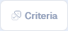

Screening Overview¶
Overview¶
The purpose of screening is to identify articles that contain datasets relevant to the Bigger Picture project. This process involves two main steps:
- Title and Abstract Screening: Initial screening of articles based on their titles and abstracts to remove completely irrelevant articles.
- Full Text Screening: A more detailed review of the full text of articles that passed the initial screening to determine if they contain relevant datasets.
The below outlines the process for screening articles, and the criteria we use to determine whether an article is relevant to the Bigger Picture project.
Setup¶
To begin screening, you will need access to the Bigger Picture Project on Rayyan. If you don't have access, please let Taren know.
Inclusion and Exclusion Criteria¶
The below are the criteria that we use to assess whether an article is relevant to the Bigger Picture project. You should read these carefully before beginning the screening process. Note that you can also access these criteria in Rayyan by clicking the  icon in the top right corner of the screen.
{kind=link}
Tip
You can also press the C key to open the criteria in Rayyan.
- Study Design
-
Cross-sectional, longitudinal studies, or control groups from experimental studies
- Population
-
Have a mean sample age younger than 18 years. If a mean study age is not available, we will use the midpoint of the age range.
- Independent Variable
-
Quantitative disaggregated measure of screen time exposure (e.g., time spent on social media, time spent on smartphones, time spent watching tv, time spent on schoolwork or educational content, watching vs interactive use).
- Outcomes
-
Quantitative measurement of at least one outcome related to children's learning, cognitive abilities, mental health, wellbeing, or behaviour. Examples include:
- Learning: General education, numeracy, literacy
- Cognitive abilities: Executive function, cognitive function
- Mental health: Anxiety, Depression, Emotions
- Behaviour: Aggression, Self-regulation, Prosocial behaviour
Note
The label used in Rayyan is the part in bold below. You only need to supply a label for a reason you are excluding an article when you are screening at the full text stage. You do not need to supply a label for the title and abstract stage.
- Wrong screen time measurement
-
Meets any of the following criteria:
- Only measured total or aggregated screen time and does not specify the type of screen activity (e.g., TV, social media, video games) and/or content (e.g., educational vs. recreational). Note, studies will be included if disaggregated screen time data was collected, even if only aggregated results were reported.
- Does not specify the type of screen activity (e.g., TV, social media, video games) and/or content (e.g., educational vs. recreational).
- Only measured ‘problematic screen use’ (e.g., internet addiction scales) which do not provide time-based measurements
- Only has a dichotomous measure of screen use (e.g., ‘meets guidelines’ or ‘does not meet guidelines’). Note, studies will be included if they measure screen time in time units, then converted to a dichotomous measure.
- Screen time measured is not ecologically valid. That is, screen time should be measured in a way that reflects real-world use. Studies where they have experimentally manipulated screen time (e.g., having children watch a show in the lab) are excluded. An example of experimental screen time study that would be included are if they placed a restriction on children’s screen time and screen time was still ecological.
- Wrong outcome
-
Does not include at least one quantitatively measured outcome related to learning, cognitive abilities, mental health, wellbeing, or behaviour.
- Wrong age
-
Mean sample age older than 18 years. If the mean age is unclear and the age range midpoint is ≥18 years
- Foreign Language
-
Full-text not available in English
- Wrong study design
-
Study designs that cannot contribute to IPD including:
- Systematic reviews, meta-analyses, or narrative reviews
- Qualitative-only designs
- Studies that only report group-level associations (e.g., screen use rates and test scores by country)
- Case studies or case reports with no participant-level quantitative data
- Data availability statement states that data cannot be shared.
-
Data availability statement states that data cannot be shared. This may be stated in the data availability section in full-text.
- PDF not available
-
Cannot retrieve full-text